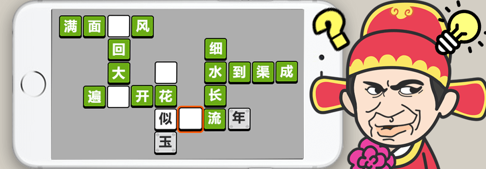
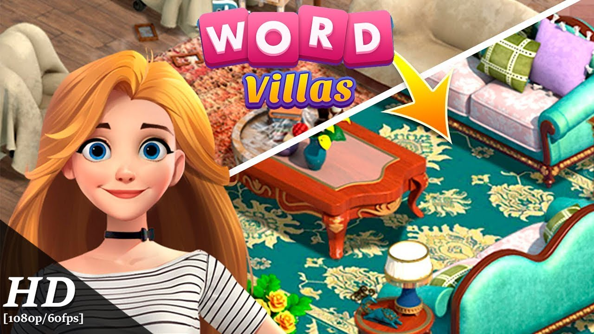
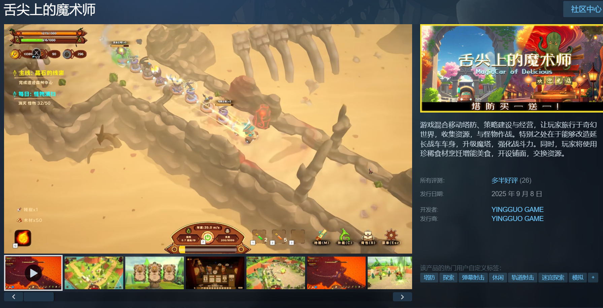
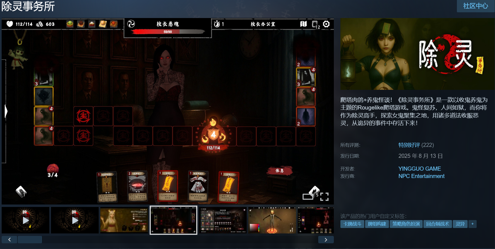
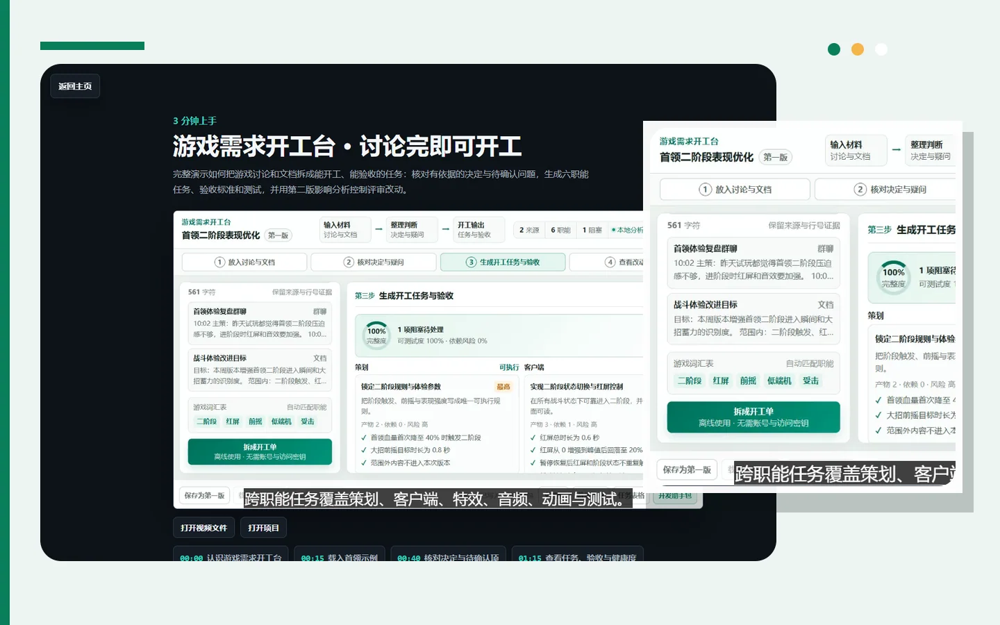
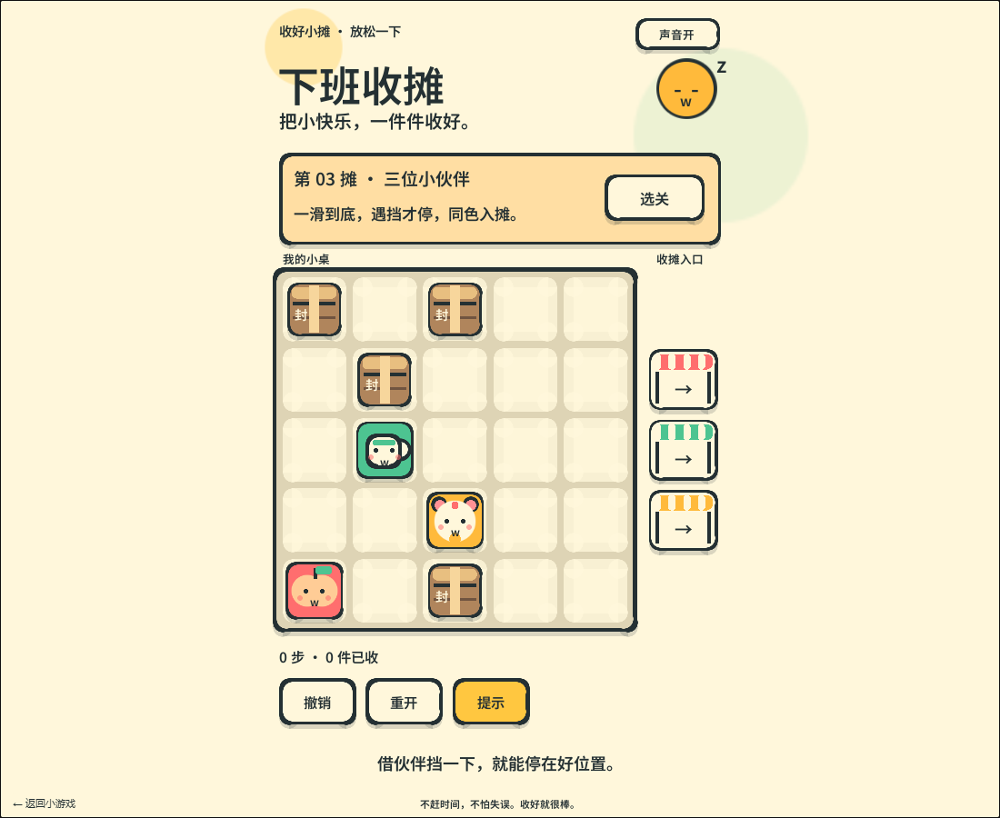

小游戏 · 唯一策划
成语小秀才
主导成语答题、科举题材包装与养成线，把文字关卡和升官成长连接起来。
- 成语答题
- 科举包装
- 成长循环
GAME PRODUCER / RESUME
游戏制作人 / 项目负责人，兼具主策划与系统策划经验。连接玩法设计、跨职能协作与研发交付，以职业项目、独立游戏和 AI 实践呈现工作价值。
SELECTED CAREER / 代表案例

小游戏 · 唯一策划
主导成语答题、科举题材包装与养成线，把文字关卡和升官成长连接起来。

海外手游 · 高级系统策划
分支剧情、锦标赛、多类型活动与投骰子玩法，从设计、开发测试到上线。
独立游戏 · 主策划 / 执行制作人
负责系统框架到落地、剧情大纲与后续验收，统筹经营、成长和恋爱养成循环。
01 / CAREER TIMELINE
中国式相亲 · 名利游戏
以主策划 / 执行制作人角色连接系统设计与项目推进：负责《中国式相亲》系统框架到落地、剧情大纲与验收；在《名利游戏》负责全部系统界面功能和线路图绘制摆放，参与分支线路与数值奖励设计配置，不含剧本创作。
查看我的角色 ↗我的小镇 · 作妖计
主策划负责《我的小镇》的任务、宝箱、图鉴、新手与数值设计，并参与《作妖计》小游戏的魔罩、魔宠系统；以框架、配置、交互和版本化文档连接设计与研发交付。
查看我的角色 ↗Word Villas · Words with Colors
在约百人规模项目中协作程序、美术与剧情组，推进 Word Villas 分支剧情、锦标赛、活动及投骰子玩法上线，承接排期、任务拆分、组内验收与项目文档等部分 PM 工作。
查看我的角色 ↗成语小秀才 · 谁是火车王 · 百变汪星人
作为《成语小秀才》项目唯一策划，主导玩法、科举题材包装与养成线；同时保留《谁是火车王》《百变汪星人》的主策划项目经历。
查看我的角色 ↗纸片少女 · 造物梦工厂
结合 QA 管理与游戏策划，承担测试管理、关卡调优、资源整理及主支线任务文案，形成从质量检查到内容设计的工作基础。
查看我的角色 ↗计算机科学与技术 · 本科 · 2015.09—2017.07
02 / SKILL TREE
从关卡、任务到系统规则，用职业项目串联设计经验。
项目排期、任务拆分、组内验收与文档交付，连接策划、程序、美术和剧情。
PC 端操作、UI/UE 与新手流程，沿着问题调整体验。
职业测试管理经历，以及个人工具中的验收与一致性检查。
用于文档撰写与检验、表格与数值工具、项目管理，以及个人工具和小游戏开发；独立游戏中也探索 UI、角色、配音与音乐音效制作。
把想法、关卡和任务变成可编辑、可交接的结构。
03 / PERSONAL PROJECTS
独立游戏、AI 工具与个人实践。
从闲暇创作到 AI 协作，持续探索游戏与工具。
INDEPENDENT GAMES / 两人合作
在参与《中国式相亲》期间，我利用闲暇时间与一位程序员合作，以两人团队开发了以下独立游戏。
我的分工
负责全部策划内容，包括关卡设计、数值设计、策划文档，以及 UI/UE 界面设计。
版本迭代：针对重复操作，设计自动售卖、战斗后资源结算和“完成战斗后进入下一天摆摊”的规则；5月版本文档标注已完成。弱点血条、章节难度调整和车身分化为文档标注进行中，不能混写成已交付成果。
经营设计依据《摆摊经营规划》的食物、食物配方、食物特性、NPC、食材和摊位六张表。表内价格标为“旧版定价”；配置结构不证明最终成交算法或上线状态，本页不公开完整价格、配方数量与成功率配置。
本轮案例依据本人提供的《关卡战斗规划》《舌尖上的魔术师》5月版本修改、项目甘特图及关卡设计。关卡设计的修订表记录 2024 年 5 月 21 日由吴天昊创建；个人分工由本人确认。完成状态仅引用文档记录，不等同于最终上线核验；不将留存、效率等预期写成实测成果。菜品售价等条目的标题与正文状态有冲突，暂不认定完成。
此前在线版本排期包含 17 项策划任务，最后修改于 2024 年 9 月，前三项标为“进行中”，其余标为“待启动”。它与本轮甘特图是不同资料快照，不互相覆盖；排期不作为全部完成或上线的证明。完整配置、成员信息及文档内的外部参考图不公开。

驾驶魔法战车探索奇幻世界，收集资源、对抗怪物；通过延长车身、升级魔塔构建移动防线，再用珍稀食材烹饪增能美食、摆摊交易，将塔防、建设与经营连接起来。
玩法简介依据官方 Steam 页面。
我的分工
负责全部策划内容，包括关卡设计、数值设计、策划文档，以及 UI/UE 界面设计。
参考本人提供的《除灵事务所》开发时间轴与开发历程完整回顾，两份均为 AI 后期整理资料。个人职责依据本人确认；开发过程与设计内容依据回顾记录，不作为所有方案全部上线或经营效果的证明。程序实现由合作者负责，回顾中其他人员署名的任务不归为本人独立成果。

灵异题材的卡牌构筑与轨道连消，结合恶灵养成、随机事件与策略取舍。
玩法简介依据官方 Steam 页面。


10 关 / 滑动整理 / 随时撤销三件小物互相充当临时挡板，一滑到底，同色入摊。十个固定关卡经解法验证，支持无限撤销、从当前状态提示、重开与自动续玩。
AI 协作覆盖关卡解法验证、原创贴图与合成音效。Windows 与 WebGL 已验收，390×844 模拟触控通过；Mac 与手机真机尚未验证。
04 / PERSONAL AGENT PRACTICE
以游戏需求开工台为例。
这里展示已有能力的阅读流程。
INPUT / 保留依据
粘贴文本或导入材料，提取决定、疑问和范围。任务可以回到来源证据，避免上下文在整理中丢失。
确认材料范围与关键原文，区分已经决定的内容和仍需确认的问题。
STRUCTURE / 可执行任务
围绕策划、客户端、特效、音频、动画与测试，组织产物、依赖和验收项，把讨论变成能继续推进的工作。
确认分工和实现范围；任务中的负责角色不代表真实团队成员或本人的履历。
REVIEW / 一致性检查
检查任务是否有验收依据、依赖是否完整、疑问是否解决。生成结果需要校对，不能直接视为已确认事实。
核对疑问与验收口径，再决定是否标记为可交付；自动检查不能替代实际验收。
HANDOFF / 可检查产物
导出 Markdown、JSON、CSV 或 Codex 上下文包；比较前后版本，查看需求改变影响哪些任务和验收项。
确认导出内容与当前版本一致，再交给团队或实现 Agent；公开示例不等于生产效率数据。
05 / CASE FILES
问题、设计取舍、产物与边界。
案例依据公开资料，AI 参与方式逐项说明。
如何让讨论变成能开工、能验收的任务？
如何同时看见上下文，又能直接继续对话？
如何用短局玩法验证观众行动与救援反馈？
06 / KEEP EXPLORING